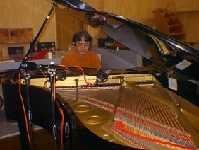
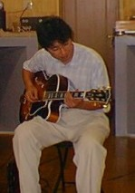
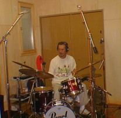

1999.08–09 河内スタヂオ録音
Here, We Have Been Through
Out Of Bounds(秋田大学医学部ジャズ研OB会)秋田大学医学部ジャズ研OB会
About the Album
作品紹介
「Here, We Have Been Through」
Out Of Bounds
1999年8月～9月
河内スタヂオ録音
発売元: The Cat Walk
￥２，０００
（CD代、税込み）
Recording Report
レコーディングレポート
ＣＤ発売決定
秋田大学医学部ジャズ研OB会
レコーディングの様子



先日当スタジオで秋田大学医学部ジャズ研OB会Out Of Boundsのレコーディングを行いました。このバンドはアマチュアですが、毎年浅草で行われるアマチュアジャズコンテストでベスト８に入っており１２月に本大会に出場した実力派バンドです。
CDも１２月上旬に発売いたしました。